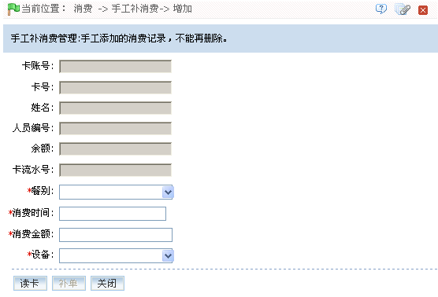
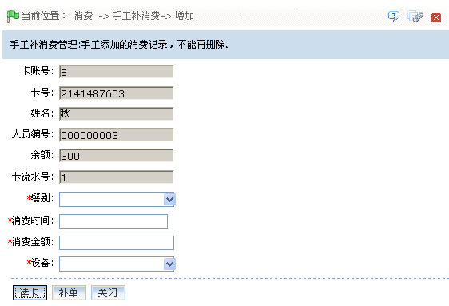

IC--8.4 手工补消费
当用户没有带卡时，可以先填一个单吃饭。下次带卡来时，可以通过手工补消费将上一次的消费记录补上。
新增手工补消费
1、单击【消费】 【手工补消费】
【手工补消费】 【新增】，进入新增手工补消费页面：
【新增】，进入新增手工补消费页面：

2、连接发卡器，将需手工补消费的卡放在发卡器的置卡处，然后单击【读卡】按钮读取卡片信息，如下图所示：

根据需要设置各参数，设置方法如下：
餐别：单击 按钮，在弹出餐别下拉框中，选择餐别。（仅“是否有效”字段设置为“有效”的餐别才会显示在下拉框中，餐别资料设置，请参见IC--8.2.4 餐别资料。）
按钮，在弹出餐别下拉框中，选择餐别。（仅“是否有效”字段设置为“有效”的餐别才会显示在下拉框中，餐别资料设置，请参见IC--8.2.4 餐别资料。）
消费时间：设置消费时间。时间的设置方法，请参见附录1 常用操作中的3. 选择时间。
消费金额：输入消费金额。
设备：单击 按钮，在弹出的设备下拉框中，选择设备。
按钮，在弹出的设备下拉框中，选择设备。
3、设置完成后，单击【补单】按钮，开始手工补消费，成功后，页面提示“补单成功”。
4、单击【关闭】按钮，返回“手工补消费”页面；此时页面将显示刚新增的消费记录。
（1）、设备的新增请参见5.2.2 新增消费设备；
（2）、无法删除已添加的手工补消费记录。